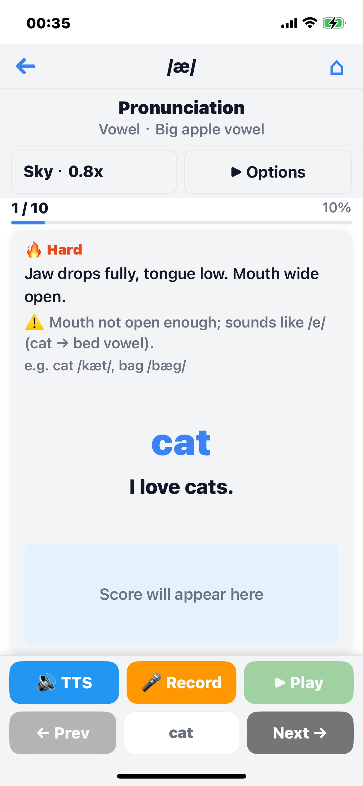
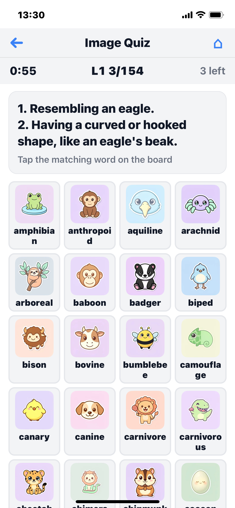

CEFR-J five bands + CET-4/CET-6 + GRE/TOEFL tags · Word Link · phonetics & Chinese CEFR-J 五级 + 四六级 / GRE / TOEFL 标签 · Word Link · 音标 + 中文
119 scenarios × 3 levels × 50 exchanges — 19,083 lines 119 个场景 × 3 个难度 × 50 轮对话 — 共 19,083 句
20 vowels + 24 consonants · US (GA) & UK (RP) 20 元音 + 24 辅音 · 美音 GA + 英音 RP
Classic readers + literary collections, all with Chinese 经典读物 + 文学合集，全部附中文翻译
0. Pronunciation — Phoneme Practice 0. 发音 — 音素练习

A dedicated module for nailing English sounds at the phoneme level — the foundation every other practice builds on. Master the sound inventory once, then everything else gets easier. 一个独立的音素级发音模块 — 它是其他所有练习的基础。先把 44 个音素掌握好，后续学习事半功倍。
44 IPA Phonemes 44 个 IPA 音素
All 20 vowels and 24 consonants of English, presented as a clean color-coded chart (vowels in orange, consonants in blue). Phonemes that are notoriously hard — especially for Chinese-speaking learners — get a 🔥 badge, so you know where to focus. 英语全部 20 个元音与 24 个辅音，以色彩分明的图表呈现（元音橙色，辅音蓝色）。对中文母语者特别困难的音素会标上 🔥 徽章，提示你重点关注。
US & UK Accents — GA and RP 美音与英音 — GA 与 RP
One tap switches between General American (GA) and Received Pronunciation (RP). IPA notation updates accordingly — for example /oʊ/ in GA becomes /əʊ/ in RP, and the British /ɒ/ appears for words like hot.
一键切换 美音 GA 与 英音 RP，IPA 标注随之更新 — 例如美音 /oʊ/ 在英音中写作 /əʊ/，hot 这类词在英音中会显示 /ɒ/。
Per-Phoneme Drill — 10 Sentences Each 逐音素训练 — 每个 10 句
Tap any phoneme to enter a focused practice: 10 carefully chosen sentences heavy in that sound. For each sentence: read the tip, listen to TTS, record yourself, and get scored on two dimensions — Accuracy (did you produce the target sound?) and Pronunciation (overall delivery). Tips can be shown in Chinese or English. 点击任意音素进入专项练习：10 句精选例句，重点强化该音素。每句流程：阅读提示 → 听 TTS → 录音 → 双维度评分 — Accuracy（准确度） 与 Pronunciation（发音）。提示语可在中英文之间切换。
Tip Layer for Each Phoneme 每个音素都有提示
Each phoneme comes with example words, an L1-interference warning (the typical mistake your native language pushes you toward), and actionable articulation tips. Tips toggle between Chinese and English so you can study in either language. 每个音素都附带：示例单词、母语干扰提示（你的母语最容易犯的错），以及可执行的发音技巧。提示语支持中英切换。
1. Word Practice 1. 单词练习

Build vocabulary and perfect pronunciation with 14,829 words organized into five levels. The ladder is anchored in CEFR-J (A1–B2) for global proficiency bands, and the upper bands also incorporate China CET-4 / CET-6 and GRE / TOEFL vocabulary tags from the dictionary — so you can drill pronunciation in the same buckets that many learners use for CET-4/6 and exam prep for studying abroad. 通过 14,829 个单词积累词汇、打磨发音，按五个等级组织。整体框架基于 CEFR-J（A1–B2），中高等级额外整合了词典中的四六级 CET-4 / CET-6 与 GRE / TOEFL 标签 — 让你在常用的备考词表里练习发音。
By Group Practice & Quip Image Mode 按组练习与 Quip 配图模式
In addition to the classic By Link word sequence, Word Practice offers By Group — thematic vocabulary sets organized by category within each level (e.g. food, travel, emotions). When you start a group session, choose: 除了经典的 By Link 单词顺序，单词练习新增 By Group — 在每个等级内按主题分组（如食物、旅行、情感）。进入某个分组练习时，可任选：
- Text mode — the familiar word-card layout with TTS, recording, and scoring 文本模式 — 经典词卡界面，TTS、录音、评分一应俱全
- Image mode — vertical Quip scene images for each word, with English and Chinese overlaid on the picture (word, definitions, and example lines) 图片模式 — 每个单词一张纵向 Quip 场景图，图上叠加 中英双语（词形、释义、例句）
Image mode supports the same practice flow: TTS playback, speech scoring, auto or manual recording, and options for example source and display. Image packs are downloaded on demand by category and can be used offline after download. 图片模式支持相同的练习流程：TTS 播放、语音评分、自动或手动录音，以及例句来源与显示选项。图片包按分类按需下载，下载后可离线使用。
Quip — Both a Sentence Source and an Image Mode Quip — 既是例句来源，也是图片模式
"Quip" shows up in two related places. In Text mode, it's the default example-sentence source: each word has a short, witty line (quipEn) with its Chinese translation (quipZh) — "humorous line + Chinese", as opposed to the plain original dictionary sentence. Toggle between Quip and Sentence from the Options panel. In Image mode, Quip refers to the full-screen vertical scene images described above. "Quip" 在两处出现。在 文本模式中，它是默认的 例句来源：每个单词配一句简短诙谐的英文（quipEn）和中文翻译（quipZh）— 即"诙谐例句 + 中文"，区别于词典原句。在 Options 面板中可切换 Quip 与 Sentence。在 图片模式中，Quip 指上文提到的全屏纵向场景图。
By Group — Thematic Word Sets 按组 — 主题词集
Browse By Group from Word Practice: pick a level, open a parent category, then choose a specific group. Each group is a curated list of related words — a focused alternative to the embedding-based Word Link order. Group practice and group tests share the same vocabulary sets. 在单词练习中浏览 按组：选定等级 → 进入父分类 → 选择具体分组。每组都是一组主题相关的单词 — 是基于词向的 Word Link 顺序之外、更聚焦的替代方案。分组练习与分组测试共用同一批词汇。
Quip Image Mode Quip 图片模式
Each word in a group can be practiced with a scene illustration. English and Chinese text appear on the image — the headword, definitions, and quip or sentence examples — so you learn in context at a glance. Swipe between words, tap for TTS, record for a score, or run Auto for hands-free rounds. Switch back to text mode anytime from Options. 分组中的每个单词都配有 场景插图。图上叠加中英文 — 词条、释义、Quip 或原句例句 — 一眼即可在语境中学习。可滑动切换、点击 TTS、录音评分，或开启 Auto 进行免手操作。随时可在 Options 中切回文本模式。
CEFR-J five bands + CET-4 / CET-6 + GRE / TOEFL CEFR-J 五级 + 四六级 / GRE / TOEFL
CEFR-J (Common European Framework — Japanese profile, TUFS) supplies the A1→B2 progression. CET-4 and CET-6 lists, plus GRE and TOEFL tags, come from the open ECDICT dataset and are merged into the levels below. Together they give a single practice path from everyday English to exam-heavy vocabulary: CEFR-J（欧洲共同语文参考框架的日本 profile，TUFS）提供 A1→B2 的进阶。四六级 CET-4 / CET-6 词表与 GRE / TOEFL 标签来自开源的 ECDICT 数据集，并合并到下列等级中。两者结合，形成一条从日常英语到备考词汇的完整路径：
- Level 5 (CEFR-J A1) — Beginner: most common words for basic communication (free) 入门：日常交流必备的高频词（免费）
- Level 4 (CEFR-J A2) — Elementary: high-frequency words for everyday use (partially free) 初级：日常使用的高频词（部分免费）
- Level 3 (CEFR-J B1 + CET-4) — Intermediate: B1 band plus CET-4 (College English Test Band 4) vocabulary (Pro) 中级：B1 等级叠加 CET-4（大学英语四级）词汇（Pro）
- Level 2 (CEFR-J B2 + CET-6) — Upper-intermediate: B2 band plus CET-6 (College English Test Band 6) vocabulary (Pro) 中高级：B2 等级叠加 CET-6（大学英语六级）词汇（Pro）
- Level 1 (GRE + TOEFL) — Advanced: words tagged GRE and/or TOEFL for academic and test prep (Pro) 高级：标注 GRE 或 TOEFL 的学术与备考词汇（Pro）
CEFR-J from cefr-j.org and Open Language Profiles. CET / GRE / TOEFL tags and Chinese glosses from ECDICT (see Data Sources). CEFR-J 来自 cefr-j.org 与 Open Language Profiles。CET / GRE / TOEFL 标签与中文释义来自 ECDICT（见数据来源）。
Word Link — Smart Grouping for Better Retention Word Link — 智能分组提升记忆
Words are not presented in random or alphabetical order. Instead, SoundsRight uses an intelligent Word Link system powered by deep learning word embeddings to group and order words in your practice sequence: 单词的练习顺序 既不是 随机，也 不是 字母序。SoundsRight 使用基于深度学习词向量的 Word Link 系统对单词进行智能分组与排序：
- Related by meaning — e.g. apple, orange, banana (fruits together) 语义相关 — 如 apple、orange、banana（水果放一起）
- Same word class — e.g. I, you, he, she (pronouns together) 同词类 — 如 I、you、he、she（代词放一起）
- Shared prefix or suffix — words with the same root, e.g. un- (unhappy, unfair), -tion (action, decision) 同前缀 / 后缀 — 同词根的词，如 un-（unhappy、unfair）、-tion（action、decision）
Deep learning word embeddings group related words together for better retention. 基于深度学习词向量的相关词聚合，帮助加深记忆。
Auto Mode 自动模式
Hands-free: TTS plays, you record, get scored, next word — no touching. 免手操作：TTS 播放 → 你录音 → 出分 → 自动进入下一词。
2. Word Test 2. 单词测试
Reinforce what you've learned with two presentation modes, each built to drive recall from a different angle so words actually stick: 用 两种呈现模式巩固所学 — 从不同角度反复唤起回忆，单词才真正记得住：
- Text Mode — the classic 6-mode quiz on listening, reading, translation, and spelling 文本模式 — 经典 6 题型：听力、阅读、翻译、拼写
- Image Mode (图片消除) — a board-clearing scavenger hunt over word icons, new in 2.4.0 图片消除模式 — 在单词图标阵中"消格子"，2.4.0 新增

Text Mode — 6 Question Styles 文本模式 — 6 种题型
Each mode can be enabled or disabled individually. Set the number of questions per mode, or let the app distribute them automatically. Track your accuracy and per-mode statistics after each test. 每个模式可单独开关。可手动设置各模式题数，或交给 App 自动分配。每次测试后可查看正确率与分模式统计。

Image Mode (图片消除) — Board-Clearing Quiz 图片消除模式 — 消格子测试
A scavenger-hunt style quiz that fills the screen with a grid of word icons — you get a prompt, tap the matching tile, and the board shrinks as you clear words one by one. Designed to push active recall through visual + textual cues together, which is what makes words actually stick. 寻物游戏式的测试：屏幕上铺满单词图标方阵 — 给出题目，你点中对应的格子，答对的词从盘面上消失，逐步把整盘清空。视觉 + 文字双线索触发主动回忆，正是记得住的关键。
Four prompt styles mix and match in a single session: 四种题型可在同一场测试中混用：
Per-question rules: 60-second timer, 3 wrong taps allowed before the question fails, and tiles disappear as you clear them — so the board physically shrinks toward empty as you work through the question list. Toggle freely between Text Mode and Image Mode from the test config screen. 每题规则：60 秒计时、最多 3 次错点（用完即判错），答对的格子从盘面消失 — 随着题目推进，整个方阵会肉眼可见地被你"消空"。在测试配置页可随时在文本模式与图片模式之间切换。
Word Book — Auto-Collect Weak Words 生词本 — 自动收集错词
Words you miss in tests are automatically added to your personal Word Book. No manual saving needed. Practice your weak spots anytime, or remove words once you've mastered them. You can also choose Word Book as a practice source to focus exclusively on your collected vocabulary. 测试中答错的词会被 自动加入 你的个人生词本，无需手动保存。可随时练习薄弱点，掌握后即可移除。也可将"生词本"选为练习来源，专门针对已收集的词汇练习。
3. Dialogue Practice 3. 对话练习

Practice real-world conversations with 19,083 dialogue lines (including 800+ common phrases and idioms) across 119 scenarios organized into 12 thematic categories. Role-play as Speaker A or Speaker B, each with independently scored pronunciation. 练习真实场景对话：19,083 句对话（含 800+ 常用短语与习语），分布在 12 大主题下的 119 个场景中。可选 A 角或 B 角，每一句都独立评分。
12 Conversation Categories 12 大对话分类
- Travel & Arrival出行与抵达
- Campus & Academic Life校园与学业
- Workplace & Career职场与工作
- Housing & Settlement租房与安家
- Dining & Groceries餐饮与采买
- Shopping & Services购物与服务
- Transportation & Driving交通与驾车
- Healthcare & Emergencies医疗与应急
- Socializing & Culture社交与文化
- Oral Exams & Formal Speaking口语考试与正式表达
- Children儿童
- Phrases & Idioms短语与习语
3 Difficulty Levels 3 个难度等级
- Easy — Short, simple exchanges with basic vocabulary (free) 简短、简单的对话，基础词汇（免费）
- Medium — Longer conversations with richer vocabulary (Pro) 更长、词汇更丰富的对话（Pro）
- Hard — Complex dialogues with nuanced expressions and idioms (Pro) 含细微表达与习语的复杂对话（Pro）
Dual-Role Scoring 双角色评分
Choose to practice as Speaker A, Speaker B, or both. Every line is individually scored on Accuracy and Fluency. Assign different TTS voices to each speaker for a natural dialogue experience. 可选 A、B 或双角练习。每一句单独评分，维度包括 Accuracy（准确度） 与 Fluency（流利度）。可为两位说话人分配不同 TTS 嗓音，呈现自然对话。
4. Dialogue Test 4. 对话测试

Timed dialogue tests challenge you to maintain fluency under pressure. 限时对话测试，挑战在压力下保持流利。
Dialogue Test Mode 对话测试模式
Complete a full conversation within a 5-minute time limit. Receive a comprehensive score report with per-line breakdowns — perfect for simulating real conversation pace. 在 5 分钟时限内完成整段对话。完成后给出综合分数与逐句明细 — 适合模拟真实语速。
Bilingual Display Toggle — 4 Modes 双语显示切换 — 4 种模式
Switch freely among four display modes: 四种显示模式自由切换：
- English — English only for full immersion 仅英文，完全沉浸
- Chinese — Chinese only for comprehension check 仅中文，检查理解
- Both — Side-by-side English and Chinese for quick reference 中英并排，便于对照
- Random — Each line randomly shows either English or Chinese, great for mixed practice 每句随机显示中或英，适合混合训练
Your preference is remembered for the next session. 设置会被自动记住，下次继续使用。
5. Article Practice 5. 文章练习

Read and speak along with full-length English passages — sentence by sentence. Each sentence is played via TTS, you read it aloud, and get instant pronunciation feedback. 朗读完整英文文章 — 逐句进行。每句先由 TTS 播放，你跟读，立刻获得发音反馈。
Auto Mode for Articles 文章自动模式
In auto mode, the app handles everything: play TTS for the current sentence, record your voice, display your score, then advance to the next sentence. Audio is cached so playback is instant after the first listen. Chinese translations can be shown or hidden. 自动模式下，App 全程接管：播放当前句 TTS → 录音 → 出分 → 自动进入下一句。音频会缓存，首次播放后即时播放。中文翻译可显示或隐藏。
Your Own Articles — Paste Any Text 你的自定义文章 — 粘贴任意文本
Beyond the built-in library, you can paste or type any English text — an essay, a news article, a chapter from a book — and the app splits it into practice segments (up to 20 words each, breaking at punctuation). Practice your own content the same way you'd practice a McGuffey reader: TTS, recording, scoring, Chinese translation on demand. Pro feature. 除了内置文库，你还可以 粘贴或输入任意英文文本 — 一篇随笔、一则新闻、书中的一个章节 — App 会自动切分为练习片段（每段最多 20 词，在标点处断开）。用练习 McGuffey 读物相同的方式练习自定义内容：TTS、录音、评分、中文翻译按需呈现。Pro 功能。
Featured: McGuffey Readers — 7 Classic Books 精选：McGuffey 读物 — 7 本经典
SoundsRight includes the complete McGuffey Eclectic Readers series — one of the most influential English reading curricula in American history. First published in 1836 by William Holmes McGuffey, these readers have sold over 130 million copies and remain a gold standard for structured, progressive English reading education. SoundsRight 收录了完整的 McGuffey Eclectic Readers 系列 — 美国历史上最具影响力的英语阅读教材之一。该系列由 William Holmes McGuffey 于 1836 年首次出版，累计销量超过 1.3 亿册，至今仍是循序渐进英语阅读教学的标杆。
The seven volumes are arranged from easiest to most advanced: 七册由易到难排列：
- 1. McGuffey's Primer
- 2. McGuffey's First Reader
- 3. McGuffey's Second Reader
- 4. McGuffey's Third Reader
- 5. McGuffey's Fourth Reader
- 6. McGuffey's Fifth Reader
- 7. McGuffey's Sixth Reader
Each book contains carefully selected passages that build vocabulary, reading fluency, and comprehension step by step. Every passage is broken into individual sentences for pronunciation practice and scoring. 每册精选文章，循序渐进地构建词汇、阅读流利度与理解力。每篇文章切分为单句，便于发音练习与评分。
Text correction: The McGuffey texts are sourced from Project Gutenberg. Because older editions may contain archaic spellings (e.g., o'er→over, 'tis→it's), OCR errors, or inconsistent punctuation, we run them through an LLM-based proofreading pipeline. Grammar and punctuation are corrected, and Chinese translations are generated to be clear and easy to understand. 文本校正：McGuffey 文本取自 Project Gutenberg。由于旧版可能存在古旧拼写（如 o'er → over、'tis → it's）、OCR 错误或标点不一致，我们用 LLM 流水线做了一次校对：修正语法与标点，并生成清晰易懂的中文翻译。
6. Article Test 6. 文章测试

Test your article reading fluency with timed assessments. Read through entire passages sentence by sentence and receive detailed scoring for each sentence. 通过限时测试检验朗读流利度。逐句读完整篇文章，并获得每句详细评分。
Article Test Mode 文章测试模式
Select any article from the library and take a timed reading test. The app tracks your score for each sentence and provides an overall assessment. Great for measuring progress over time and identifying areas that need more practice. 从文库中选择任意文章进行限时朗读测试。App 记录每句得分并给出综合评估。适合长期跟踪进步、找出薄弱环节。
Bilingual Display Toggle 双语显示切换
Same as in Dialogue Test: switch between English-only, Chinese-only, or both. Read in immersion mode, check translations when needed, or keep both visible for side-by-side learning. 与对话测试相同：可在 仅英文、仅中文、双语 间切换。沉浸阅读、需要时再查翻译，或双语并排学习。
Data Sources & Attribution 数据来源与致谢
SoundsRight uses the following data sources. All are attributed and used in accordance with their respective licenses. SoundsRight 使用以下数据源。所有数据均按各自许可证使用并标注致谢。
Word Leveling (CEFR-J + CET + GRE / TOEFL) 词汇分级（CEFR-J + CET + GRE / TOEFL）
CEFR-J provides A1, A2, B1, and B2 vocabulary bands. CET-4 / CET-6 and GRE / TOEFL markings used in Levels 3–1 come from ECDICT (not from MOE official exams); they group words for practice alongside the CEFR-J ladder. CEFR-J 提供 A1、A2、B1、B2 词汇分级。四六级 CET-4 / CET-6 与 GRE / TOEFL 标签（用于 3–1 级）来自 ECDICT（并非教育部官方考试标签）；它们与 CEFR-J 阶梯合并，便于分组练习。
- CEFR-J — The CEFR-J project (Tokyo University of Foreign Studies, Tono Laboratory) CEFR-J 项目（东京外国语大学 Tono 实验室）
- Open Language Profiles — olp-en-cefrj — CEFR-J vocabulary and grammar profile datasets CEFR-J 词汇与语法 profile 数据集
CEFR-J vocabulary and grammar profiles can be used for research and commercial purposes with proper citation. Copyright: Tono Laboratory, TUFS. CEFR-J 词汇与语法 profile 数据集可在注明出处的情况下用于研究与商业用途。版权：TUFS Tono 实验室。
Word Data: Dictionary & Phonetics 词数据：词典与音标
ECDICT (github.com/skywind3000/ECDICT) — MIT licensed: ECDICT（github.com/skywind3000/ECDICT）— MIT 许可证：
- Chinese translations中文翻译
- Phonetic pronunciation音标
- CET-4 / CET-6 tags (used in Levels 3–2 with CEFR-J B1/B2)CET-4 / CET-6 标签（用于 3–2 级，搭配 CEFR-J B1/B2）
- GRE and TOEFL tags (for Level 1 vocabulary)GRE 与 TOEFL 标签（用于 1 级词汇）
Webster's Unabridged Dictionary (Project Gutenberg): Webster's Unabridged Dictionary（Project Gutenberg）：
- Project Gutenberg — Webster's Unabridged Dictionary (public domain) Webster's Unabridged Dictionary（公共领域）
- WebstersEnglishDictionary — JSON format JSON 格式
English definitions are sourced from Webster. Definitions not in Webster, as well as example sentences, dialogue translations, and article translations, are generated by Google Gemini 3 LLM. 英文释义取自 Webster。Webster 未收录的释义、例句、对话翻译与文章翻译由 Google Gemini 3 LLM 生成。
Articles 文章
English articles come from public domain works that are free for commercial use, including the McGuffey Eclectic Readers and other classic literature. McGuffey texts are proofread via an LLM pipeline to fix archaic spellings and punctuation (see the McGuffey section above). 英文文章来自可商用的 公共领域 作品，包括 McGuffey Eclectic Readers 及其他经典文学。McGuffey 文本经 LLM 流水线校对，修正了古旧拼写与标点（见上文 McGuffey 章节）。
Vocabulary Handbook for Kindle & e-Readers 词汇手册 · Kindle 与电子阅读器版
The full 14,829-word vocabulary — the same five levels (CEFR-J + CET / GRE / TOEFL) and thematic groups as the app — packaged as an e-reader handbook. Because words are grouped by theme and by meaning, similar words sit together and are easier to memorize. Three views per group: words only (self-test), words with Chinese gloss, and memory cards with an example sentence. Best of all: read and review on an e-ink screen — easier on the eyes than a phone or tablet. 与 App 完全一致的 14,829 词词汇内容 — 同样的五级体系（CEFR-J + 四六级 / GRE / TOEFL）与主题分组 — 打包为电子阅读器手册。单词按主题、按语义分组，相近的词聚在一起，更容易记住。每个小组三种视图：只看单词（自测）、含中文释义、含例句的记忆卡片。最重要的是：在电子墨水屏上背单词，比手机、平板更护眼。
Free Downloads 免费下载
⬇ EPUB (14 MB)
—
for iPhone / iPad (Apple Books), Android readers, Kobo, etc.
适用于 iPhone / iPad（Apple 图书）、安卓阅读器、Kobo 等。
⬇ MOBI (9.5 MB)
—
for Kindle devices and the Kindle app (send to your device or use Send to Kindle).
适用于 Kindle 设备与 Kindle App（可发送到设备或使用 Send to Kindle）。
Tip: on iPhone, tap the EPUB link, then open in Apple Books. On Kindle, email the MOBI file to your Kindle address or upload via Send to Kindle. Word groups and example sentences are generated by large language models; for personal study use only. 小提示：iPhone 点击 EPUB 链接后选择用「图书」打开即可；Kindle 可将 MOBI 通过邮箱发送到设备地址，或使用 Send to Kindle 上传。分组与例句由大模型生成；仅供个人学习使用。